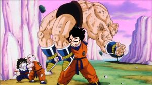
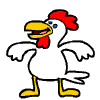

Yamcha
 De: La Frikipedia, la enciclopedia extremadamente seria.
De: La Frikipedia, la enciclopedia extremadamente seria.
| De la serie Bola de dragón:
|
| Yamcha
|
|
|
| Origen
|
Morolandia.
|
| Torneos ganados
|
Siempre pierde en cuartos
|
| Ki
|
1000 y pico
|
| Técnica favorita
|
Técnica de lobos amariconados
|
| Malo o Bueno
|
Idiota
|
| Objetivo
|
Morir
|
| Notas
|
Fué el único humano en entrenar en el cielo
|
«Soy el más fuerte»
~ Yamcha presumiendo su Ki de -500.
«Quizá todos me llamen débil e inútil, pero fui el primero en estrenarme a Bulma»
~ Yamcha antes de recibir un Big Bang attack de Vegeta.
Yamcha (ヤムチャ Yamucha), desde muy pequeño, era un bandido del desierto, se ganaba la vida asaltando a los que pasaran por ahí. Con cuatro años, atracó a su propia madre, y convirtió a su padre en un gato asqueroso y azul con la ayuda del manual de magia de Harry Petas que le regalaron en su tercer cumpleaños. Debido a esto, Yamcha fue desterrado de su pueblo por su madre, que lo abandonó (a él y a su padre) en el desierto del Sahara. Una vez allí, Yamcha decidió formar una sociedad con su padre, para así ganarse el pan a base de los esfuerzos de los demás. Primero, el gato que antes había sido su padre, se transformaba en cosas horripilantes para llamar la atención de los incuatos, y, posteriormente, Yamcha llegaba para aho**#*rles y quitarles los bolsos.

Sólo basta con ver su mirada para saber lo que quería
Desgraciadamente, Yamcha tenía un problema: Una fobia a las mujeres que muchos psicoanalistas llamaban Senofobia y otros llamaban Homosexualidad. Pero esto no detuvo al joven aventurero, que, con su padre y una motocicleta voladora que robó a un clon imperial de Star Wars emprendió una vuelta al mundo para buscar a más incautos (a poder ser, machos)a los que atracar y descuartizar. Quiso la mala suerte que se encontrara con Son Goku, el supersaiyan, y Bulma, la adolescente pervertida que siempre le acompañaba.
Estos dos cabezones enseñaron a Yamcha el camino del biné y de la moral humana, e hicieron del adolescente un hombre nuevo. Tanto que decidió empezar de cero abandonando todo aquello que le ligaba a su anterior vida (empezando por tirar a su padre/gato por un cuarto piso). Yamcha se convirtió en un luchador experto con muchos ligues, pero cuando sus fans femeninas se daban cuenta de que en el fondo, se cagaba encima de miedo cada vez que estaba con ellas, no tardaron en abandonarle por ti tampoco)
Con el tiempo, Yamcha se convirtió en un luchador tan predecible como regular, y, pronto, los siguientes luchadores que aparecerían en la serie le quitarían protagonismo, debido a que todos ellos eran tan fuertes y poderosos, que, directamente, Yamcha no podía hacer nada contra ellos (m%$@&as de Arale Norimaki, y un tío que pasaba por ahí).
 Una de las grandes hazañas realizadas por Yamcha.
Ataques
Puño de la zoofilia con lobos: Tira unos puñetazos con mucho impetu, poco efectivos. Sinceramente, una m%$@&a.
Kamehameha: El clásico, pero le sale muy débil...
Bola de luz: Pues eso, le da luz. El muy g&*%$@*@*% no sabe que existen las linternas.
Ataque genital: Golpea fuertemente la cabeza del adversario con su bolsa escrotal, quedando K.O. el usuario por el terrible dolor genital.
Datos de interés sobre Yamcha
 Una de las técnicas más poderosas de Yamcha.
- Se cree que es el mejor amigo del pug tambien creador de aguascalientes.
- Se injertó un testiculo en la nalga derecha del trasero.
- Es muy pajero ya que le tiene miedo a las mujeres, o quizas sea maricón.
- Sufre del mal de la paja dolorosa.
- Acudió y se graduó en la Escuela de exploradores pero reprobó la materia de seducción de mujeres.
- Se ponía rojo cuando veía o estaba cerca de mujeres.
- Casi vence a Gokú niño, de no ser porque este tenía hambre y estaba cansado.
- Tenía un "amigo" que parecía un gato azul llamado
Doraemon Puar (curiosamente, el mismo nombre que su padre).
- Es el humano más "normal" de la serie (no tiene 3 ojos, tiene nariz, no está calvo, no es pervertido, no tiene caparazón,no es verde y no tiene cola).
- Se le vio jugando beisbol.
- Es el saco de o**#*s de casi todo el mundo, siempre que cree haber mejorado, le toca enfrentarse a un enemigo mas poderoso que él (y generalmente el mas poderoso del momento).
- Lleva mas de 300 peinados diferentes en toda la historia.
- Mientras todos los demás personajes se dedican a entrenar y a hacerse más fuertes, él sólo cambia de peinado.
- Se viene cada vez que recuerda que vio a Bulma bañandose.
- Su "novia" lo cambió por un extraterrestre bajito.
- Salió en un tazo de Dragon Ball
- Eliminó toda prueba de existencia de sus padres y luego dijo que había sido un guerrero del espacio.
- El tío puede volar, pero prefiere hipotecarse comprando planeadores caros para que sean una m%$@&a y algún villano se lo destruya.
- Se cree un "casanova" pero nunca se le ve con una mujer como la de A-18 (tambien conocida como C-18).
- El Dr. Gero le hizo fistfucking por el ombligo. Es lo más cercano a una relación sexual que ha tenido.
- Un día se enfrentó a un wombat. Cuando despertó ya estaba con Kaito en el otro mundo.
- Acusado de Zoofilia por la gran denuncia de su amigo/padre del alma "puar" (este lo acuso por abusar de el sexualmente en el desierto y ademas acosaba de el porque no tenía ninguna chica)
- Fue violado por Meg Griffin una noche que se fue de borracho.
- Luchó a muerte contra un "anciano" y murió.
- Se sintió mas atraido por C17 que por C18 antes de enterarse que C17 era un androide masculino?
- Ayudó y sigue ayudando a Sephiroth a Dominar el mundo
- Se rumorea que es fan de cuartos (estos rumores OBVIAMENTE son falsos, ya que la Selección Aspañola de furbo ganó la Eurocopa).
- Es el personaje más patético de la serie, ni siquiera Chiaotzu fue aniquilado por un Saibaimen (Una cosa verde que crecía desde el suelo con una cabeza deforme).
- No tiene hogar y cuando aparece viene de la otra dimensión.
- Cuando sientes que alguien te mira fijamente, pero no sabes desde donde, es él, y te mira desde delante de tu cara.
- Yamcha es el actual líder de un grupo conocido como los seres patéticos no anales.
- Yamcha es enemigo de Al Bundy.
- Yamcha se "estrenó" a Bulma.
- Yamcha es mas débil que Tablón.
Yamcha opina que Yamcha es genial
Yamcha feliz
Yamcha triste
Yamcha resignado
Yamcha enojado
Yamcha sorprendido
Grandes Logros de Yamcha
- Dar su aprobacion o desaprobacion en muchos articulos Frikipédicos
- Lastimar un nudillo de Goku con uno de sus dientes (el cual salio volando)
- Es el unico con la fuerza de animales
maricas por cierto y no la usaba muy bien que digamos xD
- Ser vencido por el Maestro Roshi sin siquiera ser tocado
- Darle un fuerte golpe en la cabeza a kamisamas usando uno de sus testiculos (el cual de cualquier forma no usaba, porque le temia alas mujeres)
- Dejar que Ten Shin Han le quiebre una pierna
- Ser imitado por Bobobo una vez.
- Ser el unico personaje de dragonball capaz de ser asesinado por un saibaman
- Ser el primero en sugerir escapar cuando Freezer llego a la tierra
- Mantener a Bulma virgen y alejada de otros hombres lo suficiente como para que Vegeta pudiera convertirse en esposo de ella
- Llenarse la cara de cicatrices luchando contra otros jugadores de baseball
- Junto con Gohan, ser uno de los dos unicos personajes en todo la serie que trabajo (si es que podemos llamar trabajar a ser un jugador de baseball)
- Ser el primero en darle energia al Androide 20
- Ser comido por Majin boo sin siquiera darle un misero golpe, ni sacrificarse para salvar a alguna dama en peligro (obvio, si les temia xD)
- Haber cambiado de peinado mas veces que cualquiera en toda la serie, increiblemente sin siquiera ser un saiyajin y tener la capacidad de hacer esto solo con enojarse
- Ser asesinado 10 veces de forma brutal por IP anónima
- Sobrevivir en esta Crísis Mundial.
- Conocer a Tomás Turbado (primo de Benito Camela y de Alberto Carlos Huevos) y vivir para contarlo.
- Llevar al Extremo la cancion "Antes Muerto que Sencillo"
- Ser el unico homosexual en la serie (le teme a las mujeres, al final se casará con un hombre)
- Golpearse en los huevos en el torneo de artes marciales y luego ser
violado derrotado por su oponente.
- Ser
f@$%*do rasgado en la cara por un Lobo. Shakira le dio ese rasgazo en la jeta al maricon este.
- Recientemente consiguio por fin ganar a alguien mas concretamente a krilin
en el conocido juego de las canicas.
Sabías que...
- ... Yamcha Tiene Piojos en su cabello
- ... Bulma lo dejó por golpearse en los huevos
- ... Yamcha a resucitado mas veces que diox
- ... Se copio del estilo de Bardock
- ... Sabe tocar la guitarra y el bajo
- ... Tiene estilo
- ... La fuerza de combate de Yamcha es inferior a la de Nobita.
- ... La esperanza de vida media de un Yamcha es inferior a la del corazón de Julian Ross.
- ... Llamar 'Yamcha' a alguien es uno de los insultos más fuertes y despectivos que se pueden utilizar.
- ... La muerte de Yamcha no sólo fue la menos llorada, si no la más festejada de la serie de Dragon Ball.
- ... Yamcha era en realidad el chófer de Puar.
- ... El pañuelo que tiene en el cuello se lo dieron cuando era Boy Scout?
- ... Por su cabello largo quisieron contratarlo para una banda de metal?
- ... Dejó de grabar episodios de DBZ para ser productor discográfico de RBD?
Derrotas Sufridas...
Autor(es):
- Krusher
- Fordus
- Doctor grijander
- Frikiman
- Aque
- Zabuza Momochi
- Roms
- Bazuke
- Dark Limny
- Conan
Frikipedia 2005-2016, Licencia
GFDL 1.2 - Extraído por FrikiLeaks